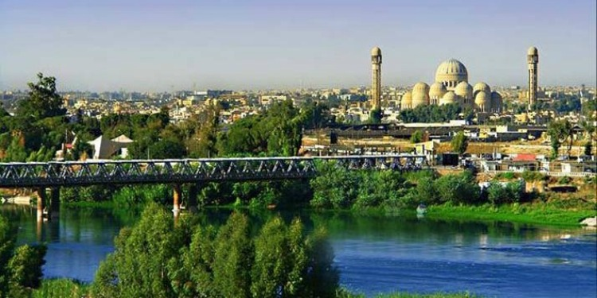
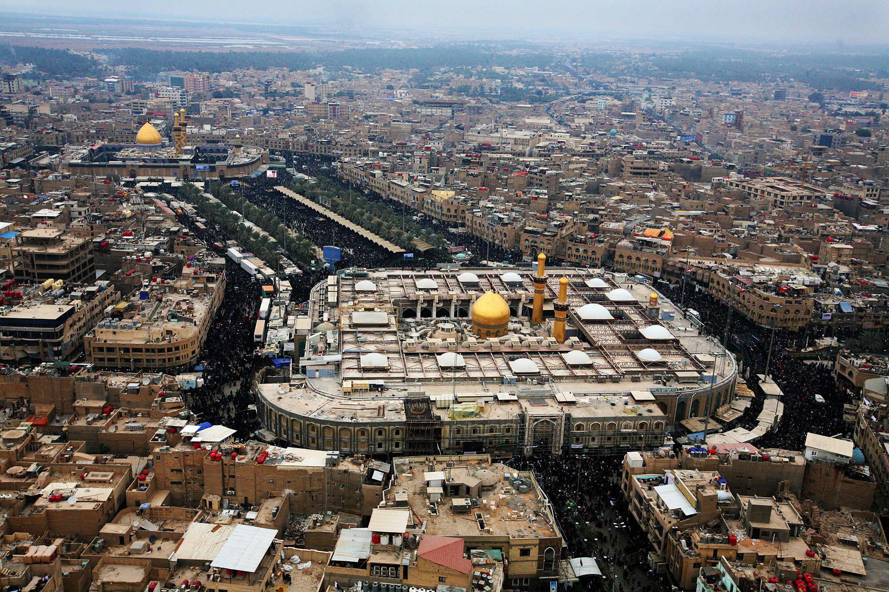
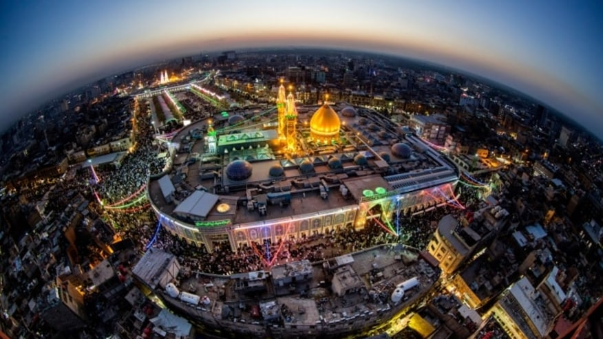

Basra is an Iraqi city located on the Shatt al-Arab. It had an estimated population of 1.4 million in 2018. Basra is also Iraq's main port, although it does not have deep water access, which is handled at the port of Umm Qasr. The city is one of the ports from which the fictional Sinbad the Sailor journeyed.
Founded at the beginning of the Islamic era in 636, Basra became a flourishing commercial and cultural center from around 1200 and has remained so onwards. Situated along the Shatt al-Arab river, formed by the confluence of the Euphrates and the Tigris, the city's many canals and creeks once gave rise to the epithet Venice of the East.
Mosul
Mosul is romanized: Al-Mawṣil, is a major city in northern Iraq. It is the capital of Nineveh governorate and is Iraq's second largest city. Located approximately 400 km (250 mi) north of Baghdad; Mosul stands on the Tigris river. The metropolitan area of Mosul has grown from the old city on the western side to encompass substantial areas on both the "Left Bank" (east side) and the "Right Bank" (west side), as the two banks are described by the locals compared to the flow direction of Tigris. Mosul encloses the ruins of the ancient Assyrian city of Nineveh on its east side.
Erbil
Erbil or Hawler known in ancient history as Arbela, is the capital and most populated city in the Kurdistan Region of Iraq. It has around 1.5 million inhabitants, while Erbil Governorate has 2,932,800 inhabitants as of 2020.
Karbala
Karbala or is a city in central Iraq, located about 100 km southwest of Baghdad, and a few miles east of Lake Milh, also known as Razzaza Lake. Karbala is the capital of Karbala Governorate, and has an estimated population of 700,000 people. The Battle of Karbala was fought on 10 October 680 (10 Muharram in the year 61 AH of the Islamic calendar) between the army of the second Umayyad caliph Yazid I and a small army led by Husayn ibn Ali, the grandson of the Islamic prophet Muhammad, at Karbala.
Al-Najaf

Najaf or Al-Najaf, also known as Baniqia, is a city in central Iraq about 160 km south of Baghdad. Its estimated population is the 2013 was 1,000,000 people. It is the capital of Najaf Governorate.
An-Najaf is considered sacred by Shi'a Muslims. An-Najaf is renowned as the site of the burial place of Muhammad's son in law and cousin, Imam ‘Alī ibn Abī Tālib. The city is now a center of pilgrimage throughout the Shi'ite Islamic world. It is estimated that only Mecca and Medina receive more Muslim pilgrims. As the burial site of Shi'i Islam's second most important figure, the Imam Ali Mosque is considered by Shiites as the third holiest Islamic site.
The Imam ‘Ali Mosque is housed in a grand structure with a gold gilded dome and many precious objects in the walls. Nearby is the Wadi-us-Salaam cemetery, the largest in the world. It contains the tombs of several prophets and many of the devout from around the world aspire to be buried there, to be raised from the dead with Imām ‘Alī on Judgement Day. Over the centuries, numerous hospices, schools, libraries and convents were built around the shrine to make the city the center of Shīʻa learning and theology.